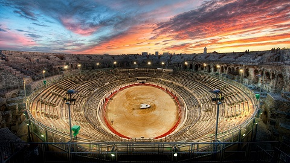
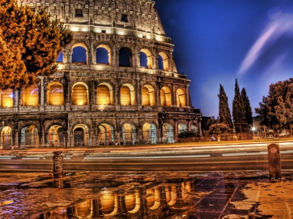
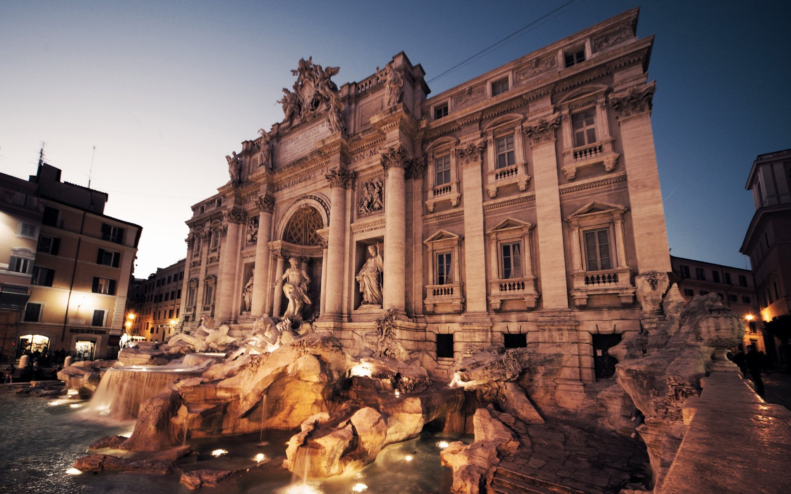
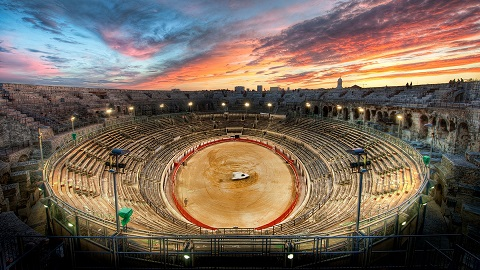
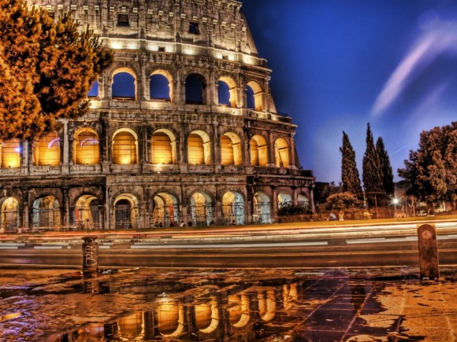
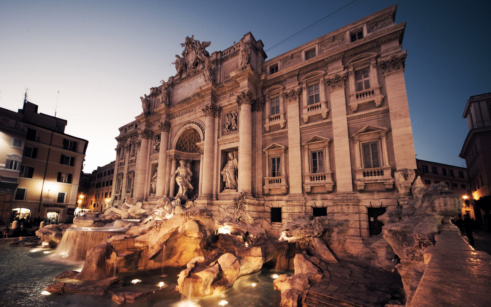

Rome
Bienvenue à Rome
Mélange de sophistication et de provincialisme, de sociabilité et de brutalité, Rome, ancienne caput mundi (capitale du monde), fascine toujours autant le visiteur. Ville d'histoire par excellence, elle allie monuments célèbres, quartiers pittoresques et vie artistique animée.
Mais, loin d'être figée dans ses ruines, la Ville Éternelle fusionne de manière enivrante passé et présent : des piliers de temples surgissent derrière les arrêts de bus, les fêtards se trémoussent dans des chapelles du XIVe siècle et les arènes accueillent des concerts de rock. Dans le fouillis des vestiges impériaux, des fontaines baroques et des cafés rétro, se dévoile un cocktail décoiffant d'art de rue, de quartiers multiethniques et de saveurs italo-fusion bien ancrés dans le XXIe siècle.
Vous marchiez sur les pas des empereurs, vous voilà en train de danser devant un groupe de rock dans un bar couvert de graffitis. On connaissait l'audace de Berlin et l'excentricité de Londres. La Rome du nouveau millénaire rivalise avec les villes du Nord. Ces dernières années ont vu la naissance de deux nouveaux musées d'art contemporain, d'un centre des arts de la scène et d'une profusion de festivals dynamiques.
Les lieux à visiter
-
Colisée
On a beau l’avoir vu maintes fois en photo, le monument le plus emblématique de Rome, le Colisée, ne laisse pas indifférent lorsqu’il surgit devant vos yeux. Depuis 2000 ans, ce gigantesque amphithéâtre symbolise la puissance de l’Empire romain et la crainte qu’il inspirait. Imaginer ses gradins en pente raide remplis de spectateurs frénétiques assoiffés du sang des gladiateurs donne le frisson.
-
Palatin
Des sept collines de Rome, le Palatin, surtout, dévoile un panorama superbe. Cette verte étendue de ruines, parsemées de pins, évoque le luxe inimaginable dans lequel vivaient les empereurs romains. C’est là que Romulus, après avoir assassiné son frère Remus, aurait fondé la ville en 753 av. J.-C.
-
Museo e Galleria Borghese
Si tout le monde a entendu parler de Michel-Ange et de sa chapelle Sixtine, Rome célèbre pourtant davantage l’art baroque que celui de la Renaissance. Les collections de ce beau musée leur rendent pareillement hommage, avec des sculptures du Bernin et des peintures du Caravage, de Raphaël et de Titien. Sans oublier des œuvres néoclassiques de Canova. Il faut réserver, mais le jeu en vaut la chandelle. Après la visite, le parc de la Villa Borghèse permet une pause agréable.
-
Panthéon
Le mieux conservé des monuments antiques de Rome impressionne par son imposante façade à colonnade et ses murs extérieurs robustes, mais c’est une fois son seuil franchi qu’on perçoit toute sa mesure. Le puits de lumière qui descend de l’oculus au centre de l’immense coupole du Panthéon éclaire les tombeaux royaux le long des parois circulaires recouvertes de marbre de l’édifice.
-
Musées du Vatican
De toutes les merveilles artistiques de la Ville éternelle, peu ont la puissance des fresques de Michel-Ange sur le plafond de la chapelle Sixtine. Ce kaléidoscope d’images et de couleurs forme le bouquet final des musées du Vatican, la plus importante collection d’art de Rome. Les œuvres se succèdent sur des kilomètres de galeries menant aux quatre chambres de Raphaël et, au-delà, à la fameuse chapelle.
-
Basilique Saint-Pierre
Pas besoin d’avoir la foi pour être subjugué par la basilique Saint-Pierre ! Avec sa place en ellipse, sa façade grandiose et son intérieur d’une incroyable opulence, que couronne la coupole hors du commun de Michel-Ange, la plus grande et la plus spectaculaire des églises de Rome, véritable incarnation du catholicisme, a été clairement conçue pour susciter l’admiration et le respect.
-
Ostia Antica
Ostia Antica est un port de la Rome antique qui fut laissé à l’abandon et dont certaines parties sont aussi bien conservées que Pompéi. Vous ne regretterez pas le voyage jusqu’à ce complexe où s’articulent habitations, thermes, théâtre, temples et latrines, et qui égale largement les sites les plus célèbres du centre-ville. Il suffit de déambuler le long du Decumanus Maximus, l’axe principal, et d’entrer dans le Thermopolium (échoppe de restauration rapide) pour imaginer la vie quotidienne d’une ville romaine, ce qu’aucune visite du Forum romain ne vous permettra jamais.
-
Dîner en terrasse
dans le centre historiqueManger en extérieur est l’un des grands plaisirs de Rome, surtout l’été quand la chaleur règne. Rien de tel qu’une terrasse dans une jolie ruelle pavée où l’on déguste une savoureuse cuisine italienne arrosée d’un vin robuste en contemplant le spectacle de la ville. Restaurant raffiné à l’ambiance romantique, pizzeria bruyante ou glacier de rêve, il y en a pour tous les goûts.
-
Piazza Navona
Depuis des millénaires, les espaces publics sont au cœur de la vie de la cité. C’est là qu’avaient lieu marchés, cérémonies, jeux et même exécutions, et encore aujourd’hui, ils attirent une foule dense et animée de Romains, touristes, hipsters, gastronomes et revendeurs de billets. La Piazza Navona est sans doute la plus spectaculaire. C’est sur cet immense espace construit sur un stade du Ier siècle que se tint le marché de la ville pendant des siècles. Elle offre un tableau en constant mouvement, avec ses fontaines baroques déchaînées, ses artistes de rue et ses terrasses de cafés.
-
Forum Romain
La promenade à travers ces ruines éparses suit les pas des grandes figures de l’histoire romaine, tels Jules César et Pompée qui remontèrent triomphalement la Via Sacra, l’axe principal du forum. L’affluence sur le site ne date pas d’hier car il formait jadis le centre bourdonnant de Rome, où se déroulait la vie économique et civique.
-
Musées du Capitole
Dans l’Antiquité, deux temples majeurs s’élevaient au sommet du Capitole. Aujourd’hui, les touristes gravissent la colline pour admirer la vue et découvrir les musées qui bordent la Piazza del Campidoglio. Premiers musées publics au monde, ils recèlent une formidable collection de statuaire antique, comprenant des pièces comme la fameuse Lupa Capitolina (Louve capitoline), bronze emblématique attribué à tort aux Étrusques, ainsi que des peintures magnifiques. Dans la cour d’entrée gisent les fragments d’un colosse à l’effigie de Constantin.
-
Shopping dans le Tridente
En contrebas de l’escalier de la Trinité-des-Monts s’étend le quartier commerçant le plus huppé de Rome. On trouve dans le Tridente tous les grands noms de la mode : Dolce & Gabbana, Gucci, Bulgari, Valentino, Prada, Fendi, etc. Bien qu’il s’adresse à une clientèle aisée, le quartier jouit d’une atmosphère unique et renferme aussi quelques petits ateliers d’artisans (souvent cachés au premier étage) confectionnant sculptures en marbre, sacs et ceintures sur mesure.
Découvrez la beauté de Rome


 




